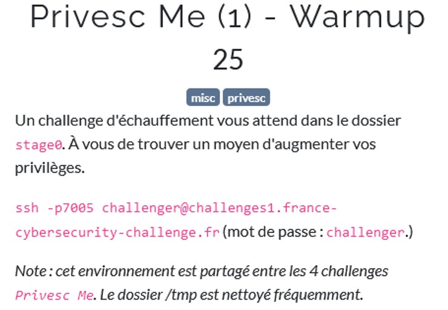
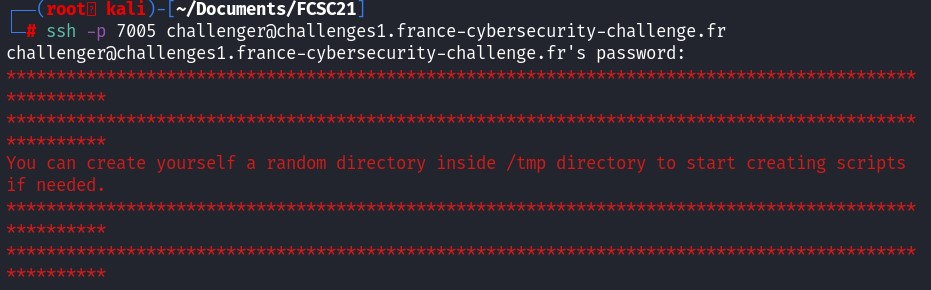
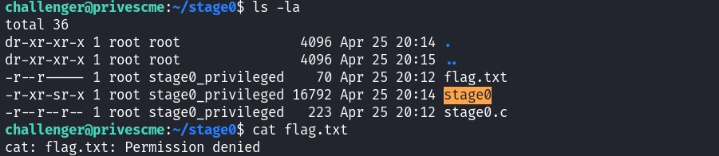
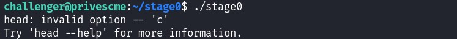
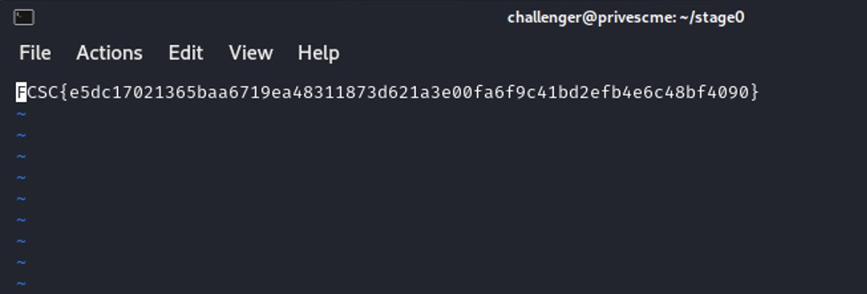

Connecting to the server through ssh, the server tells us that the /tmp directory is writable.
Let's navigate to the folder stage0 as the subject mention it, the file flag.txt is present but we do not have the permission to open it.

A .c file and a binary file are also presents, let's check the what kind of code do we have inside.
#define _GNU_SOURCE
#include <stdlib.h>
#include <unistd.h>
#include <sys/types.h>
int main(int argc, char const *argv[]) {
setresgid(getegid(), getegid(),getegid());
system("head -c5 flag.txt");
return 0;
}
Inside of the main function, we have two functions setresgid() and system(). Setresgid() will set the real user ID, the effective user ID, and the saved set-user-ID of the calling process. Here, it is not useful, because it is taking geteid() as argument which return the effective user ID.
The second function is more interesting, system() will execute a command in the console. Here, it executes
head with the parameter
-c 5 which prints the first 5 characters of the file.
We see that the argument in system is not a absolute path, which mean that if we change the environment variable PATH to point to a specific directory that we can write then we can control the behavior of the command head. Moreover, the binary file contain SGID bit which means that we will run the program under the permissions of a member of the group.
Another good thing is that the /tmp directory is writtable, let's copy the binary cat to /tmp/head and then modify the environment variable $PATH to point to /tmp. Once it is done, when the funtion system() calls head, it will first look at /tmp, and if head exists then the code of head will be executed.
cp /usr/bin/cat /tmp/head
export PATH=/tmp:$PATH

The problem is because
cat command does not have a parameter -c, this is why it is showing the error "invalid option -- c".
We need to find a way to print the content of flag.txt that takes into account the parameter -c. After some researches, vim have a parameter -c.
vim -c <command> : Execute <command> after loading the first file
vim will run "5", but 5 means nothing in vim, so vim will simply just ignore the command. Let's copy vim into /tmp/head.
cp /usr/bin/vim /tmp/head
Let's run the program : ./stage0
